Deep Learning - Beginners Track
Instructor: Shangeth Rajaa
Non-Linearity
Note: We will look mostly at classification examples, but the same concepts apply to regression problems as well with a little change in using activation function(Sigmoid, Softmax which we learned in previous sections).
So far the datasets we have used are linearly separable, which means they can be separated by line(2-d), plane(3-d) and linear multi dimensional classifiers.
But in the real world, not all datasets are 2-d(visualizable) and linearly separable.

Logistic Regression(Binary Classification) and Softmax Regression(Multi Class Classification) are linear models, they can only predict lines/planes/linear n-dim models to classify the data. They are note good at classifying a non-linear data.
Let’s visualize it on linear and non-linear data.
Visualize Linear Dataset and Linear Model
- Make a Linear Dataset
- Train a Logistic Regression
- Predict the probabilities using the model for whole plot grid, and colour it based on if p>0.5 or not.
It’s fine if you don’t understand how we are going to visualize it, it’s just a matplotlib plot.
from sklearn.datasets import make_blobs
import matplotlib.pyplot as plt
X, y = make_blobs(n_samples=1000, n_features=2, centers=2, random_state=3)
# remember the code we wrote to get the index of 0, 1 classes and scatter it separately
# that was to understand how to plot each class
# that plotting can also be done easily in a single line :D :p
plt.figure(figsize=(10,10))
plt.scatter(X[:,0], X[:,1],c=y)
plt.grid(True)
plt.show()
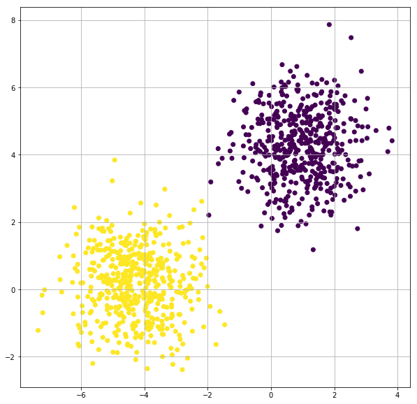
Train a Logistic Regression Model with TensorFlow for Linearly Separable Dataset
import tensorflow as tf
from tensorflow import keras
from sklearn.datasets import make_blobs
from sklearn.model_selection import train_test_split
import numpy as np
# get the dataset
X, y = make_blobs(n_samples=2000, n_features=2, centers=2, random_state=3)
# make train-validation split, let's ignore test set for now.
X_train, X_val, y_train, y_val = train_test_split(X, y, test_size=0.3, random_state=3)
model = tf.keras.Sequential([keras.layers.Dense(units=1, input_shape=[2]), keras.layers.Activation('sigmoid')])
model.compile(optimizer='adam', loss='binary_crossentropy', metrics=['accuracy'])
tf_history = model.fit(X_train, y_train, epochs=20, verbose=True, validation_data=(X_val, y_val))
Train on 2000 samples, validate on 600 samples
Epoch 1/20
2000/2000 [==============================] - 0s 204us/sample - loss: 0.4580 - acc: 0.7000 - val_loss: 0.3898 - val_acc: 0.7650
Epoch 2/20
2000/2000 [==============================] - 0s 49us/sample - loss: 0.3796 - acc: 0.7930 - val_loss: 0.3236 - val_acc: 0.8450
.
.
Epoch 19/20
2000/2000 [==============================] - 0s 43us/sample - loss: 0.0602 - acc: 0.9970 - val_loss: 0.0521 - val_acc: 1.0000
Epoch 20/20
2000/2000 [==============================] - 0s 41us/sample - loss: 0.0566 - acc: 0.9970 - val_loss: 0.0490 - val_acc: 1.0000
import numpy as np
xx, yy = np.mgrid[-10:10:.1, -10:10:.1]
grid = np.c_[xx.ravel(), yy.ravel()]
probs = model.predict(grid)[:,0].reshape(xx.shape)
f, ax = plt.subplots(figsize=(8, 6))
contour = ax.contourf(xx, yy, probs, 25, cmap="RdBu",
vmin=0, vmax=1)
ax_c = f.colorbar(contour)
ax_c.set_label("$P(y = 1)$")
ax_c.set_ticks([0, .25, .5, .75, 1])
ax.scatter(X[:,0], X[:, 1], c=y, s=50,
cmap="RdBu", vmin=-.2, vmax=1.2,
edgecolor="white", linewidth=1)
plt.show()
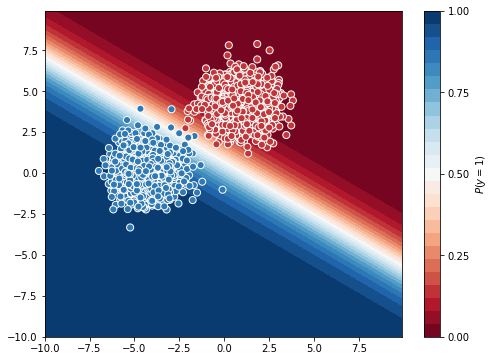
This plot shows the probability of each point in the grid belongs to class ‘1’. We can see the white line is able to separate almost all the points and accuracy is also good.
Visualize Non-Linear Dataset and Linear Model
- Make a Non-Linear Dataset with
sklearn.datasets.make_gaussian_quantiles. - Train a Logistic Regression
- Predict the probabilities using the model for whole plot grid, and visualize the model classifier
from sklearn.datasets import make_moons
import matplotlib.pyplot as plt
X, y = make_moons(n_samples=1000, random_state=3, noise=0.1)
idx = np.where(X[:,0] < 1.1)
X = X[idx]
y = y[idx]
plt.figure(figsize=(10,10))
plt.scatter(X[:,0], X[:,1],c=y)
plt.grid(True)
plt.show()
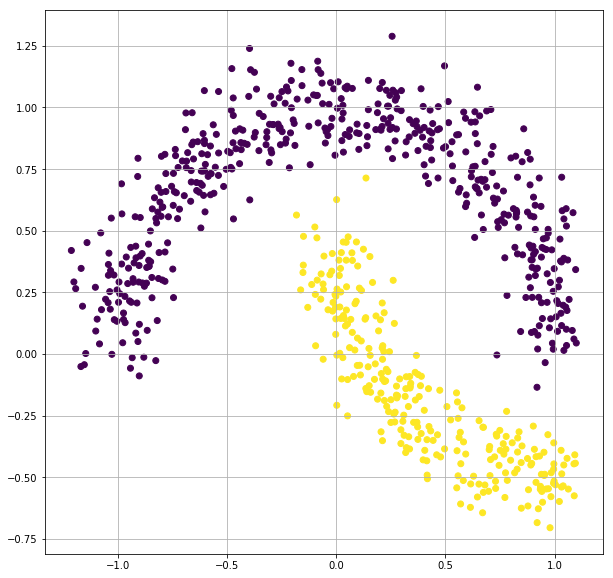
Train a Logistic Regression Model with TensorFlow for Non-Linear Dataset
import tensorflow as tf
from tensorflow import keras
from sklearn.datasets import make_gaussian_quantiles
from sklearn.model_selection import train_test_split
import numpy as np
# get the dataset
# X, y = make_gaussian_quantiles(n_samples=1000, n_features=2, n_classes=2, random_state=3, cov=0.1)
X, y = make_moons(n_samples=1000, random_state=3, noise=0.1)
idx = np.where(X[:,0] < 1.1)
X = X[idx]
y = y[idx]
# make train-validation split, let's ignore test set for now.
X_train, X_val, y_train, y_val = train_test_split(X, y, test_size=0.3, random_state=3)
model = tf.keras.Sequential([keras.layers.Dense(units=1, input_shape=[2]), keras.layers.Activation('sigmoid')])
model.compile(optimizer='adam', loss='binary_crossentropy', metrics=['accuracy'])
tf_history = model.fit(X_train, y_train, epochs=20, verbose=True, validation_data=(X_val, y_val))
Train on 764 samples, validate on 230 samples
Epoch 1/20
764/764 [==============================] - 0s 469us/sample - loss: 0.4796 - acc: 0.8338 - val_loss: 0.4810 - val_acc: 0.8130
Epoch 2/20
764/764 [==============================] - 0s 46us/sample - loss: 0.4747 - acc: 0.8351 - val_loss: 0.4766 - val_acc: 0.8087
.
.
Epoch 19/20
764/764 [==============================] - 0s 44us/sample - loss: 0.4223 - acc: 0.8364 - val_loss: 0.4281 - val_acc: 0.8174
Epoch 20/20
764/764 [==============================] - 0s 44us/sample - loss: 0.4202 - acc: 0.8364 - val_loss: 0.4261 - val_acc: 0.8174
import numpy as np
xx, yy = np.mgrid[-2:2:.01, -2:2:.01]
grid = np.c_[xx.ravel(), yy.ravel()]
probs = model.predict(grid)[:,0].reshape(xx.shape)
f, ax = plt.subplots(figsize=(8, 6))
contour = ax.contourf(xx, yy, probs, 25, cmap="RdBu",
vmin=0, vmax=1)
ax_c = f.colorbar(contour)
ax_c.set_label("$P(y = 1)$")
ax_c.set_ticks([0, .25, .5, .75, 1])
ax.scatter(X[:,0], X[:, 1], c=y, s=50,
cmap="RdBu", vmin=-.2, vmax=1.2,
edgecolor="white", linewidth=1)
plt.show()
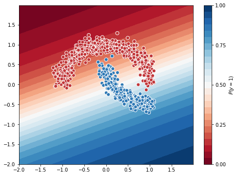
You can see the logistic regression model, cannot separate a non-linear data. The model(white area) separates the grid into 2 regions linearly which is not a good classifier for this dataset.
Let’s make another dataset
Another Example (More difficult)
from sklearn.datasets import make_gaussian_quantiles
X, y = make_gaussian_quantiles(n_samples=1000, n_features=2, n_classes=2, random_state=3, cov=0.1)
plt.figure(figsize=(10,10))
plt.scatter(X[:,0], X[:,1],c=y)
plt.grid(True)
plt.show()
# make train-validation split, let's ignore test set for now.
X_train, X_val, y_train, y_val = train_test_split(X, y, test_size=0.3, random_state=3)
model = tf.keras.Sequential([keras.layers.Dense(units=1, input_shape=[2]), keras.layers.Activation('sigmoid')])
model.compile(optimizer='adam', loss='binary_crossentropy', metrics=['accuracy'])
tf_history = model.fit(X_train, y_train, epochs=20, verbose=True, validation_data=(X_val, y_val))
# contour plot
xx, yy = np.mgrid[-2:2:.01, -2:2:.01]
grid = np.c_[xx.ravel(), yy.ravel()]
probs = model.predict(grid)[:,0].reshape(xx.shape)
f, ax = plt.subplots(figsize=(8, 6))
contour = ax.contourf(xx, yy, probs, 25, cmap="RdBu",
vmin=0, vmax=1)
ax_c = f.colorbar(contour)
ax_c.set_label("$P(y = 1)$")
ax_c.set_ticks([0, .25, .5, .75, 1])
ax.scatter(X[:,0], X[:, 1], c=y, s=50,
cmap="RdBu", vmin=-.2, vmax=1.2,
edgecolor="white", linewidth=1)
plt.show()
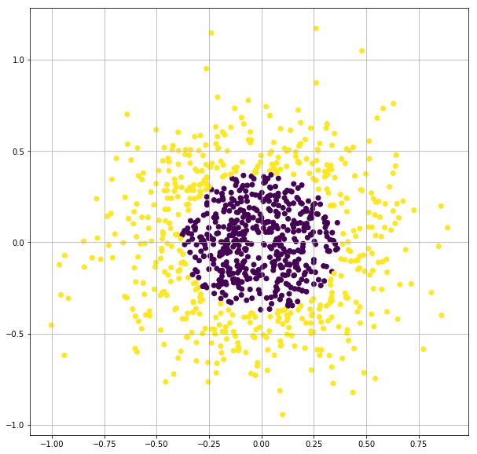
Train on 1000 samples, validate on 300 samples
Epoch 1/20
1000/1000 [==============================] - 0s 375us/sample - loss: 0.7122 - acc: 0.5000 - val_loss: 0.6955 - val_acc: 0.5300
Epoch 2/20
1000/1000 [==============================] - 0s 44us/sample - loss: 0.7114 - acc: 0.4980 - val_loss: 0.6952 - val_acc: 0.5300
.
.
Epoch 19/20
1000/1000 [==============================] - 0s 48us/sample - loss: 0.7018 - acc: 0.4940 - val_loss: 0.6912 - val_acc: 0.5433
Epoch 20/20
1000/1000 [==============================] - 0s 48us/sample - loss: 0.7013 - acc: 0.4930 - val_loss: 0.6910 - val_acc: 0.5467
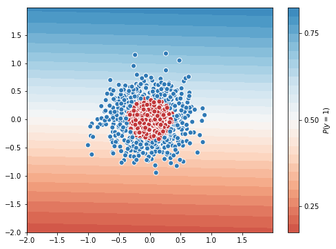
Logistic Regression Classifier for this dataset is worse. It uses a straight line to separate concentric circles. We cannot depend much on Linear classifiers on real world dataset(non-linear).
Non-linear Dataset with Linear Classifier
Hope you remember Polynomial Regression, when the dataset is non-linear, we gave the model the non linear terms, so the model can use it in linear fashion to make a non-linear regressor.
We are going to try the same for classifier.
Polynomial Terms
As the data is circular, 2nd degree polynomial terms will do good. Also try higher degree to see if accuracy increases.
from sklearn.preprocessing import PolynomialFeatures
poly = PolynomialFeatures(degree=2)
X, y = make_gaussian_quantiles(n_samples=2000, n_features=2, n_classes=2, random_state=3, cov=0.1)
X_2 = poly.fit_transform(X)
print(X_2.shape)
print(X_2[0])
(2000, 6)
[1. 0.16654979 0.21185179 0.02773883 0.03528387 0.04488118]
Train Logistic Regression Model with 2nd degree polynomial terms
X, y = make_gaussian_quantiles(n_samples=2000, n_features=2, n_classes=2, random_state=3, cov=0.1)
X_2 = poly.fit_transform(X)
# make train-validation split, let's ignore test set for now.
X_train, X_val, y_train, y_val = train_test_split(X_2, y, test_size=0.3, random_state=3)
model = tf.keras.Sequential([keras.layers.Dense(units=1, input_shape=[6]), keras.layers.Activation('sigmoid')])
model.compile(optimizer='adam', loss='binary_crossentropy', metrics=['accuracy'])
tf_history = model.fit(X_train, y_train, epochs=200, verbose=True, validation_data=(X_val, y_val))
# contour plot
xx, yy = np.mgrid[-2:2:.01, -2:2:.01]
grid = np.c_[xx.ravel(), yy.ravel()]
probs = model.predict(poly.fit_transform(grid))[:,0].reshape(xx.shape)
f, ax = plt.subplots(figsize=(8, 6))
contour = ax.contourf(xx, yy, probs, 25, cmap="RdBu",
vmin=0, vmax=1)
ax_c = f.colorbar(contour)
ax_c.set_label("$P(y = 1)$")
ax_c.set_ticks([0, .25, .5, .75, 1])
ax.scatter(X[:,0], X[:, 1], c=y, s=50,
cmap="RdBu", vmin=-.2, vmax=1.2,
edgecolor="white", linewidth=1)
plt.show()
Train on 1400 samples, validate on 600 samples
Epoch 1/200
1400/1400 [==============================] - 1s 387us/sample - loss: 0.7530 - acc: 0.4914 - val_loss: 0.7292 - val_acc: 0.5200
Epoch 2/200
1400/1400 [==============================] - 0s 48us/sample - loss: 0.7375 - acc: 0.4914 - val_loss: 0.7169 - val_acc: 0.5200
.
.
Epoch 199/200
1400/1400 [==============================] - 0s 50us/sample - loss: 0.3552 - acc: 0.9164 - val_loss: 0.3886 - val_acc: 0.8933
Epoch 200/200
1400/1400 [==============================] - 0s 50us/sample - loss: 0.3543 - acc: 0.9136 - val_loss: 0.3876 - val_acc: 0.8967
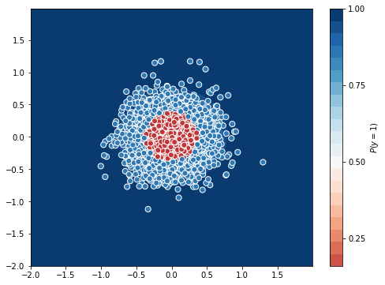
The model with 2nd degree data performed well, it got an accuracy of 0.91 in 200 epochs and seems to increase if you train longer.
The problem is, as we were able to visualize this dataset, we concluded to include 2nd degree terms, but real world datasets are multi-dimensional, you cannot visualize those.
Multi-Layer Perceptron or usually called as Artificial neural Networks or simply Neural Networks can help us with this problem.
Note: Linear Regression, Logistic Regression are also Neurons(not Network). Softmax Regression is a network of several linear classifiers so it is also a network. But we usually denote something as neural network when it has a hidden layer, which we will discuss later.
Combination of Linear Classifiers
Non-linear data and Linear Classifier
classifier 1
from sklearn.datasets import make_moons
import matplotlib.pyplot as plt
X, y = make_moons(n_samples=1000, random_state=3, noise=0.1)
idx = np.where(X[:,0] < 1.1)
X = X[idx]
y = y[idx]
xline = np.arange(-1.3, 1.2, 0.01)
yline = xline + 0.5 # random classifier
plt.figure(figsize=(10,10))
plt.scatter(X[:,0], X[:,1],c=y)
plt.plot(xline, yline)
plt.grid(True)
plt.show()
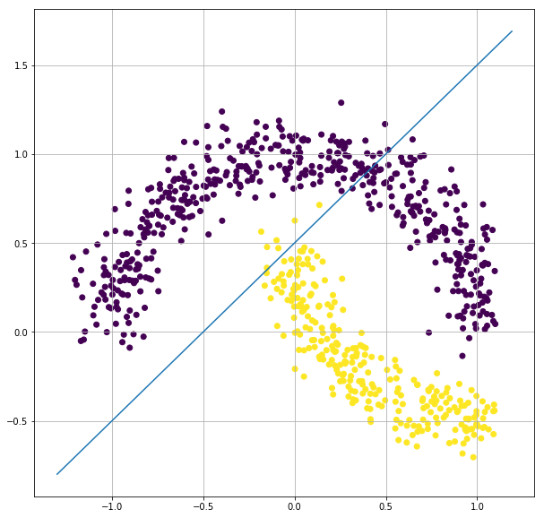
This line can be one of the classifiers, but does not give a better accuracy, as yellow side also have few blue data points.
classifier 2
from sklearn.datasets import make_moons
import matplotlib.pyplot as plt
X, y = make_moons(n_samples=1000, random_state=3, noise=0.1)
idx = np.where(X[:,0] < 1.1)
X = X[idx]
y = y[idx]
xline = np.arange(-1.3, 1.2, 0.01)
yline = - xline + 0.6 # random classifier
plt.figure(figsize=(10,10))
plt.scatter(X[:,0], X[:,1],c=y)
plt.plot(xline, yline)
plt.grid(True)
plt.show()
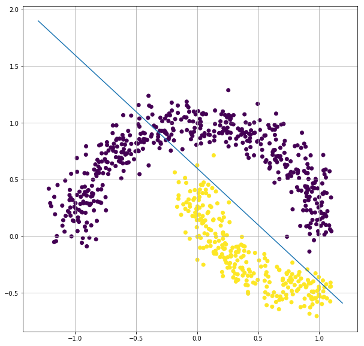
This can also be a classifier but again it has few data mis classified.
Let’s say there are 2 logistic regression classifiers - classifier 1 - clf1 - classifier 2 - clf2
both are fine, but they also misclassified some data points.
So both the classifiers individually cannot classify the data very well because the data is non-linear and the classifiers are linear.
But if we combine these 2 classifiers that can make a non-linear classifier.
from sklearn.datasets import make_moons
import matplotlib.pyplot as plt
X, y = make_moons(n_samples=1000, random_state=3, noise=0.1)
idx = np.where(X[:,0] < 1.1)
X = X[idx]
y = y[idx]
xline1 = np.arange(-1.3, 0.01, 0.01)
yline1 = xline1 + 0.6
xline2 = np.arange(0, 1.2, 0.01)
yline2 = - xline2 + 0.6 # random classifier
plt.figure(figsize=(10,10))
plt.scatter(X[:,0], X[:,1],c=y)
plt.plot(xline1, yline1, color='b')
plt.plot(xline2, yline2, color='b')
plt.grid(True)
plt.show()
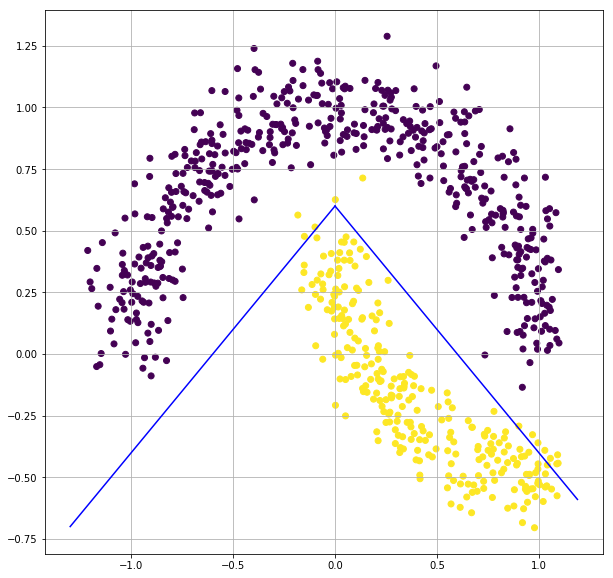
This will be one of the best classifiers, by moving the 2 lines a little more, we can get an accuracy of nearly 1.0 for this dataset. Also we can make this classifier better by combining more number of linear classifiers.
So combination of linear classifiers can be a good non-linear classifier.
This is the primary motivation behind Artificial neural networks.
How do we combine the Linear Classifiers?
We saw that combining multiple linear classifiers can give a non-linear classifier. But how do we do that?
Let’s assume we have 2 classifiers: $C_1, C_2$
$C_1 : \hat{y}_1 = \sigma(X.W_1+b_1)$
$C_2 : \hat{y}_2 = \sigma(X.W_2+b_2)$
So both $C_1, C_2$ gives the probability that a point belongs to class ‘1’. We need to combine $C_1, C_2$, so we can take the outputs of $C_1, C_2$ ie: $\hat{y}_1$ and $\hat{y}_2$ and send it to a new logistic regression model $C_3$.
But we no more need probabilities from $C_1, C_2$, so we may/maynot use sigmoid function. But we need to use some non-linearity as combination of linear function directly will be a linear function, which is of no use to us. So we can also use some other famous activations like tanh, ReLU, etc.
$C_1 : \hat{y}_1 = g(X.W_1+b_1)$
$C_2 : \hat{y}_2 = g(X.W_2+b_2)$
g can be any activation, sigmoid, tanh, relu,..etc.
$X_{new} = [\hat{y}_1, \hat{y}_2]$
$C_3 : \hat{y} = \sigma(X_{new}.W_3 + b_3)$
This combination of Neurons is called Multi Layer Perceptron or ANN or Neural networks in general.
Let’s implement this in Tensorflow.
Before that try this Tensorflow Playground
Tensorflow Playground
MLP in Tensorflow
X, y = make_moons(n_samples=2000, random_state=3, noise=0.1)
idx = np.where(X[:,0] < 1.1)
X = X[idx]
y = y[idx]
# make train-validation split, let's ignore test set for now.
X_train, X_val, y_train, y_val = train_test_split(X, y, test_size=0.3, random_state=3)
model = tf.keras.Sequential([
keras.layers.Dense(units=2, input_shape=[2]),
keras.layers.Activation('tanh'),
keras.layers.Dense(units=1),
keras.layers.Activation('sigmoid')])
model.compile(optimizer='adam', loss='binary_crossentropy', metrics=['accuracy'])
tf_history = model.fit(X_train, y_train, epochs=500, verbose=True, validation_data=(X_val, y_val))
# contour plot
xx, yy = np.mgrid[-1.5:1.5:.1, -1:1.5:.1]
grid = np.c_[xx.ravel(), yy.ravel()]
probs = model.predict(grid)[:,0].reshape(xx.shape)
f, ax = plt.subplots(figsize=(8, 6))
contour = ax.contourf(xx, yy, probs, 25, cmap="RdBu",
vmin=0, vmax=1)
ax_c = f.colorbar(contour)
ax_c.set_label("$P(y = 1)$")
ax_c.set_ticks([0, .25, .5, .75, 1])
ax.scatter(X[:,0], X[:, 1], c=y, s=50,
cmap="RdBu", vmin=-.2, vmax=1.2,
edgecolor="white", linewidth=1)
plt.show()
Train on 1066 samples, validate on 457 samples
Epoch 1/500
1066/1066 [==============================] - 1s 776us/sample - loss: 0.5274 - acc: 0.7739 - val_loss: 0.5217 - val_acc: 0.7856
Epoch 2/500
1066/1066 [==============================] - 0s 61us/sample - loss: 0.5105 - acc: 0.7927 - val_loss: 0.5075 - val_acc: 0.7812
.
.
Epoch 499/500
1066/1066 [==============================] - 0s 63us/sample - loss: 0.0167 - acc: 0.9991 - val_loss: 0.0138 - val_acc: 1.0000
Epoch 500/500
1066/1066 [==============================] - 0s 62us/sample - loss: 0.0165 - acc: 0.9991 - val_loss: 0.0137 - val_acc: 1.0000
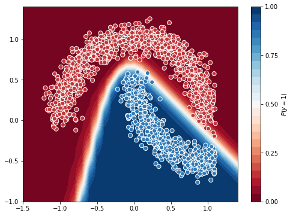
Yay! We just trained our first Neural Network(at least for this course).
You can see the neural network model is as expected, it combined 2 linear models to give a better non-linear model.
Neural Networks are the state of the art(SOTA) for almost all the modern learning problems, there are many types of neural networks which we will learn later in the course.
Train the model with: - different units in the first layer - another linear layer and activation function - different activation function - different number of epochs - different dataset(especially for the concentric circles dataset)